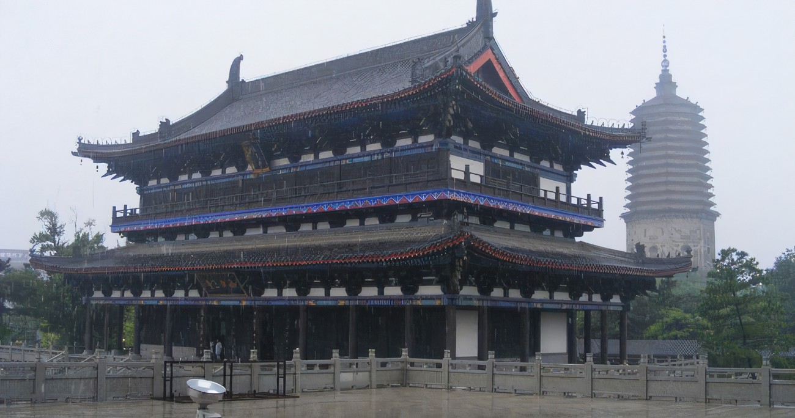

辽阳市

古称:襄平 辽东城
辽宁省辖地级市
城市介绍:
国务院批复确定的以石化产业为主的现代工业城市、辽中南地区中心城市和国家历史文化名城。
截至2021年，辽阳市下辖5个区、1个县，代管1个县级市，总面积4743平方千米，建成区面积139.5平方千米。
辽阳地处中国东北地区、辽宁中部，是沈阳都市圈副中心城市，新兴的现代石化轻纺工业基地和中国优秀旅游城市是东北地区最早的城市之一。
从公元前3世纪到17世纪前期，一直是中国东北地区的政治、经济和文化中心、交通枢纽和军事重镇
辽阳是东北最古老的城市之一，是拥有两千多年历史的文化名城。战国时期，为燕国辽东郡治所，秦沿燕制。
汉初辽阳为辽东国首府，后仍将辽东郡治设于此。公孙氏时期，襄平为平州及辽东郡治。西晋初年，襄平再次成为辽东国首府，后改平州治。
东晋时期，辽阳先后被前燕、前秦、后燕、高句丽等地方民族政权占据。唐代辽阳为辽城州治所，一度成为安东都护府府治。
辽、金时期，设东京辽阳府。元代为辽阳行省驻地。明设辽东都指挥使司，统辖辽宁全境。
清初曾在辽阳建都，后设辽阳府辽阳县，再改辽阳县为辽阳州，民国置辽阳县。
2021年，辽阳实现地区生产总值859.7亿元，同比下降1%，年末全市常住人口157.7万。